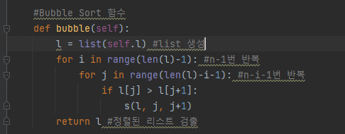
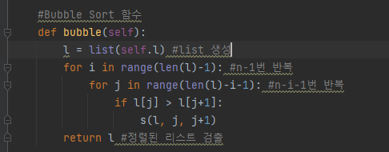
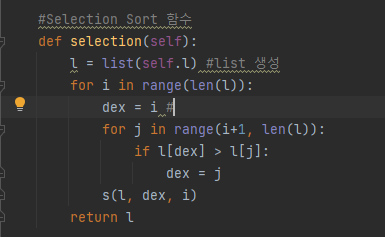
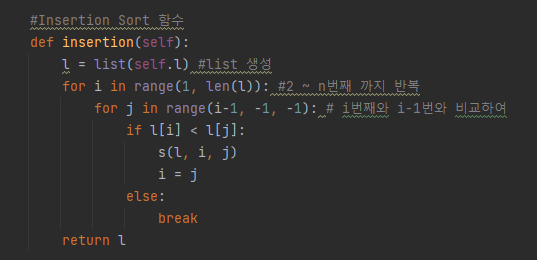
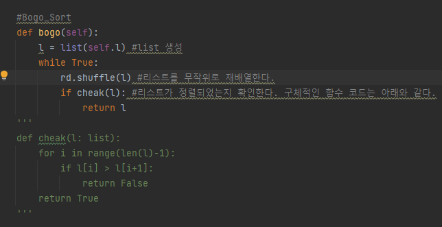
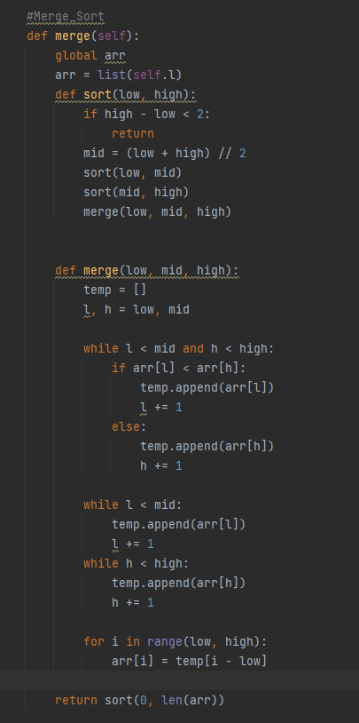
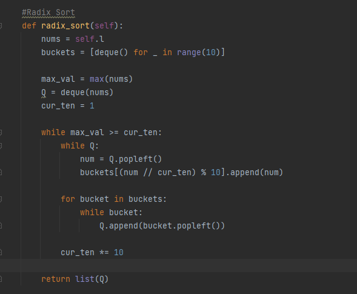

Bubble Sort
- Bubble Sort의 원리는 다음과 같다.
① i번째 원소와 (i+1)번째 원소를 비교한다.
② 1번을 정렬 될때까지 최대 n*(n-1)/2만큼 반복한다.
Bubble Sort의 Python 코드는 다음과 같다.

1학년때 정보시간에 파이썬을 만든 이후로 파이썬의 자료 구조에 대한 궁금한 점이 많았고 이를 활용해 정렬 알고리즘을 만드는 것에 대해 궁금한 점이 많았다. 또한 그 외에도 리스트를 정렬하기 위해서 시간복잡도를 효율적으로 줄이고 그를 개선할 수 있는 방법에 대해 궁금할뿐만 아니라 정렬 알고리즘의 시각적 표현들을 보고 이를 개선할 수 있는 방법에 대해 평소부터 궁금한 점이 많았기 때문에 탐구하기로 하였다.
- 1.1 Bubble Sort
- 1.2 Selection Sort
- 1.3 Insertion Sort
- 1.4 Bogo Sort
- 1.5 Merge Sort
- 1.6 Radix Sort
- 2.1 사용되는 알고리즘에 대한 결합
- 2.2 결과물
- Bubble Sort의 원리는 다음과 같다.
① i번째 원소와 (i+1)번째 원소를 비교한다.
② 1번을 정렬 될때까지 최대 n*(n-1)/2만큼 반복한다.
Bubble Sort의 Python 코드는 다음과 같다.

- Selection Sort의 원리는 다음과 같다.
① list의 1번째로 가장작은 원소를 탐색하여 그 원소와 1번째 위치의 원소와 자리를 맞바꾼다.
② 위 과정에서 2번째로 가장작은 원소... n번째로 가장작은 원소를 만든다.
Selection Sort의 Python 코드는 다음과 같다.

- Insertion Sort의 원리는 다음과 같다.
① k번째 원소를 선택한다. 그리고 그를 앞 원소와 비교한다
② 만약 앞 원소보다 k번째 원소가 작으면 그 인덱스를 저장한다.
③ (②)의 과정을 k를 리스트의 원소개수-1만큼 정수집합 속 부드럽게 이동하며 반복한다.
Insertion Sort의 Python 코드는 다음과 같다.

- Bogo Sort의 원리는 다음과 같다.
① 리스트를 무작위로 뒤섞는다.
② 정렬되었는지 확인하고 정렬되어 있지 않다면 ①을 반복한다.
Bogo Sort의 Python 코드는 다음과 같다.

- Merge Sort의 원리는 다음과 같다.
① 어떤 한 리스트의 원소의 개수가 1개 또는 0개가 될 때까지 분할한다.
② 분할된 리스트를 역순으로 크기를 비교해가며 정렬한다.
Merge Sort의 Python 코드는 다음과 같다. (이 코드는 다른 사람의 코드를 사용하였다.)

- Radix Sort의 원리는 다음과 같다.
① 10진법으로 이루어진 리스트의 원소들이 있다하고 q0, q1, q2, ..., q9를 만들자.
② 먼저 첫번째 자리숫자가 0이면 q0에 1이면 q1에, ..., 9이면 q9에 순서대로 저장한다. 그 후 저장된 숫자를 q0에서부터 차례대로 불러온다.
③ 두번째로 두번째 자리숫자가 0이면 q0에, ..., 9이면 q9에 저장하고 순서대로 뽑는다.
③ 위 와 비슷하게 이 과정을 데이터의 최대 자리수만큼 차근차근 자리숫자를 바꾸면서 반복한다.
Radix Sort의 Python 코드는 다음과 같다. (이 코드 또한 다른 사람의 코드를 사용하였다.)

- 사용할 알고리즘의 원리들은 Merge Sort, Bogo Sort, bubble Sort의 원리들을 이용해보자.
Merge Sort의 경우 리스트를 분할하여 재결합하는 원리를 사용하자. 그리고 분할을 실행하자.
이제 확률적인 관점에서 접근해보자. 리스트의 크기가 1이나 0으로 분할되면 그것들은 전부 정렬된 상태이다. 그리고 이를 결합시키자. (-Merge Sort의 원리 부분 채용)
결합을 시킬때 이를 랜덤하게 어떤 한 리스트를 선택한다. 그리고 그 리스트보다 더 큰 원소를 가진 것을 오른쪽에 배치하고 작은 원소를 가진 것을
왼쪽에 배치한다. 그리고 이 상태를 '아주 조금 정렬된 상태'라고 정의하자. 그리고 이 과정을 리스트의 크기에 따라(이 함수는 정확하게 결정되지 않음)
이 과정을 반복하여 '조금 정렬된 상태'를 만들자. 이제 부분적으로 Merge Sort처럼 리스트들을 결합한 뒤에 Bubble Sort를 리스트에 크기에 따른 함수에 맞춰 반복 실행시켜준다.
그러면 리스트를 '많이 정렬된 상태'를 만들 수 있다.
- 위 알고리즘은 정렬 알고리즘의 새로운 관점을 제시한다고 생각한다. 왜냐하면 위의 과정에 따르면 개인적으로 생각하는 많이 정렬된 상태인 리스트는 정렬하는
방법을 생각하는 것은 여러가지 생각할 수 있다 생각했다. 또한 확률적 밀러-라빈 소수판별 알고리즘의 경우처럼 수학적인 원리를 사용하면 적은 반복을 통하여 리스트를
많이 정렬된 상태로 만들 수 있다고 생각한다. 여기서 만든 알고리즘의 시간복잡도는 O(n*f(n))인데 여기서 f(n)을 log(n)보다 작게 만들 수 있으면 기존의 리스트를
정렬하는 것보다 훨씬 빠르게 만들 수 있다고 생각한다. 그리고 사실 이것은 정렬 함수보다는 method의 역할으로서 효율적이라고 생각한다. 결국 본 연구에서는 정렬 알고리즘을
확률적 개념과 결합하여 정렬을 하는 좋은 방식이 존재하는가라는 의문을 제시하고 그를 해결하기 위해 여러가지 방법을 생각해보았다.
-이 연구를 진행하면서 내가 생각하지 못하거나 힘들 것이라고 생각되는 여러가지 알고리즘에 대해 찾아보게 되었고 각 정렬 알고리즘의 특징과 원리뿐만 아니라
평소 찾아보던 자료구조에 대해 더 잘 이해할 수 있었다. 그리고 이 연구에 넣어놓지는 않았지만 그 외에도 Gravity Sort, Counting Sort 등등에 대해 알게 되어서
많은 정렬 알고리즘에 대한 시각화를 보며 조금 더 새로운 관점으로 어떤 알고리즘의 토대를 바라볼 수 있게 되었다.
-https://www.codeit.kr/paths/skill/intro-to-python-programming?categoryId=62c288e9672c77328d2aa4a7&utm_source=google_paid&utm_medium=pmax&utm_campaign=da_purchase&utm_content=general&gclid=Cj0KCQjwxMmhBhDJARIsANFGOSs3UL4PADz1yYAkEDYAFp2FAQAVUViICMc7OUSGwlZ_zM8sJ0Z7WvIaAgLgEALw_wcB (codeit python강의)
-https://namu.wiki/w/%EC%A0%95%EB%A0%AC%20%EC%95%8C%EA%B3%A0%EB%A6%AC%EC%A6%98 (나무위키: 정렬 알고리즘)
-https://hsp1116.tistory.com/33
-https://ko.wikipedia.org/wiki/%EB%B0%80%EB%9F%AC-%EB%9D%BC%EB%B9%88_%EC%86%8C%EC%88%98%ED%8C%90%EB%B3%84%EB%B2%95
-https://ko.wikipedia.org/wiki/%ED%99%95%EB%A5%A0%EC%A0%81_%EC%95%8C%EA%B3%A0%EB%A6%AC%EC%A6%98
-https://ko.wikipedia.org/wiki/%EA%B2%B0%EC%A0%95%EB%A1%A0%EC%A0%81_%EC%95%8C%EA%B3%A0%EB%A6%AC%EC%A6%98